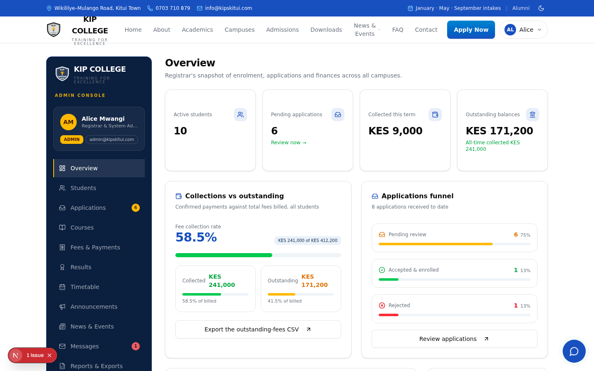

Live KPIs: enrolment, fee collection rate, applications funnel
Interactive charts: payment trends and campus distribution
Complete student records with search and detail views
Admissions review: accept or decline with one click
Announcements to students, staff or everyone
Five one-click CSV exports: students, payments, applications, results, outstanding balances

Admin overview — live system.